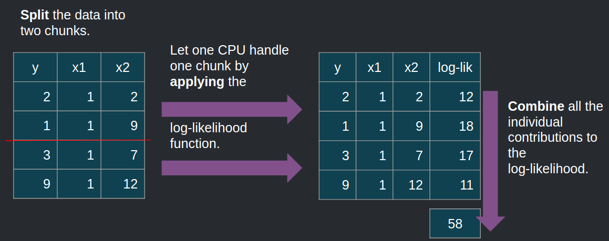

Split-apply-combine for Maximum Likelihood Estimation of a linear model
October 5, 2019

Intro
Maximum likelihood estimation is a very useful technique to fit a model to data used a lot in econometrics and other sciences, but seems, at least to my knowledge, to not be so well known by machine learning practitioners (but I may be wrong about that). Other useful techniques to confront models to data used in econometrics are the minimum distance family of techniques such as the general method of moments or Bayesian approaches, while machine learning practitioners seem to favor the minimization of a loss function (the mean squared error in the case of linear regression for instance).
When I taught at the university, students had often some problems to understand the technique. It is true that it is not as easy to understand as ordinary least squares, but I’ll try to explain to the best of my abilities.
Given a sample of data, what is the unknown probability distribution that most likely generated it? For instance, if your sample only contains 0’s and 1’s, and the proportion of 1’s is 80%, what do you think is the most likely distribution that generated it? The probability distribution that most likely generated such a dataset is a binomial distribution with probability of success equal to 80%. It might have been a binomial distribution with probability of success equal to, say, 60%, but the most likely one is one with probability of success equal to 80%.
To perform maximum likelihood estimation, one thus needs to assume a certain probability distribution, and then look for the parameters that maximize the likelihood that this distribution generated the observed data. So, now the question is, how to maximize this likelihood? And mathematically speaking, what is a likelihood?
Some theory
First of all, let’s assume that each observation from your dataset not only was generated from the same distribution, but that each observation is also independent from each other. For instance, if in your sample you have data on people’s wages and socio-economic background, it is safe to assume, under certain circumstances, that the observations are independent.
Let \(X_i\) be random variables, and \(x_i\) be their realizations (actual observed values). Let’s assume that the \(X_i\) are distributed according to a certain probability distribution \(D\) with density \(f(\theta)\) where \(\theta\) is a parameter of said distribution. Because our sample is composed of i.i.d. random variables, the probability that it was generated by our distribution \(D(\theta)\) is:
\[\prod_{i=1}^N Pr(X_i = x_i)\]
It is customary to take the log of this expression:
\[\log(\prod_{i=1}^N Pr(X_i = x_i)) = \sum_{i=1}^N \log(Pr(X_i = x_i))\]
The expression above is called the log-likelihood, \(logL(\theta; x_1, ..., x_N)\). Maximizing this function yields \(\theta^*\), the value of the parameter that makes the sample the most probable. In the case of linear regression, the density function to use is the one from the Normal distribution.
Maximum likelihood of the linear model as an example of the split-apply-combine strategy
Hadley Wickham’s seminal paper, The Split-Apply-Combine Strategy for Data Analysis presents the split-apply-combine strategy, which should remind the reader of the map-reduce framework from Google. The idea is to recognize that in some cases big problems are simply an aggregation of smaller problems. This is the case for Maximum Likelihood Estimation of the linear model as well. The picture below illustrates how Maximum Likelihood works, in the standard case:

Let’s use R to do exactly this. Let’s first start by simulating some data:
library("tidyverse")
size <- 500000
x1 <- rnorm(size)
x2 <- rnorm(size)
x3 <- rnorm(size)
dep_y <- 1.5 + 2*x1 + 3*x2 + 4*x3 + rnorm(size)
x_data <- cbind(dep_y, 1, x1, x2, x3)
x_df <- as.data.frame(x_data) %>%
rename(iota = V2)
head(x_df)## dep_y iota x1 x2 x3
## 1 1.637044 1 0.2287198 0.91609653 -0.4006215
## 2 -1.684578 1 1.2780291 -0.02468559 -1.4020914
## 3 1.289595 1 1.0524842 0.30206515 -0.3553641
## 4 -3.769575 1 -2.5763576 0.13864796 -0.3181661
## 5 13.110239 1 -0.9376462 0.77965301 3.0351646
## 6 5.059152 1 0.7488792 -0.10049061 0.1307225Now that this is done, let’s write a function to perform Maximum Likelihood Estimation:
loglik_linmod <- function(parameters, x_data){
sum_log_likelihood <- x_data %>%
mutate(log_likelihood =
dnorm(dep_y,
mean = iota*parameters[1] + x1*parameters[2] + x2*parameters[3] + x3*parameters[4],
sd = parameters[5],
log = TRUE)) %>%
summarise(sum(log_likelihood))
-1 * sum_log_likelihood
}The function returns minus the log likelihood, because optim() which I will be using to optimize
the log-likelihood function minimizes functions by default (minimizing the opposite of a function is the
same as maximizing a function). Let’s optimize the function and see if we’re able to find the
parameters of the data generating process, 1.5, 2, 3, 4 and 1 (the standard deviation of the
error term):
optim(c(1,1,1,1,1), loglik_linmod, x_data = x_df)We successfully find the parameters of our data generating process!
Now, what if I’d like to distribute the computation of the contribution to the likelihood of each observations across my 12 cores? The goal is not necessarily to speed up the computations but to be able to handle larger than RAM data. If I have data that is too large to fit in memory, I could split it into chunks, compute the contributions to the likelihood of each chunk, sum everything again, and voila! This is illustrated below:

To do this, I use the {disk.frame} package, and only need to change my loglik_linmod() function
slightly:
library("disk.frame")
x_diskframe <- as.disk.frame(x_df) #Convert the data frame to a disk.frame
loglik_linmod_df <- function(parameters, x_data){
sum_log_likelihood <- x_data %>%
mutate(log_likelihood =
dnorm(dep_y,
mean = iota*parameters[1] + x1*parameters[2] + x2*parameters[3] + x3*parameters[4],
sd = parameters[5],
log = TRUE)) %>%
chunk_summarise(sum(log_likelihood))
out <- sum_log_likelihood %>%
collect() %>%
pull() %>%
sum()
-out
}The function is applied to each chunk, and chunk_summarise() computes the sum of the contributions
inside each chunk. Thus, I first need to use collect() to transfer the chunk-wise sums in memory
and then use pull() to convert it to an atomic vector, and finally sum them all again.
Let’s now optimize this function:
optim(rep(1, 5), loglik_linmod_df, x_data = x_diskframe)## $par
## [1] 1.5351722 1.9566144 3.0067978 4.0202956 0.9889412
##
## $value
## [1] 709977.2
##
## $counts
## function gradient
## 502 NA
##
## $convergence
## [1] 1
##
## $message
## NULLThis is how you can use the split-apply-combine approach for maximum likelihood estimation of a
linear model! This approach is quite powerful, and the familiar map() and reduce() functions
included in {purrr} can also help with this task. However, this only works if you can split your
problem into chunks, which is sometimes quite hard to achieve.
However, as usual, there is rarely a need to write your own functions, as {disk.frame} includes
the dfglm() function which can be used to estimate any generalized linear model using disk.frame objects!
Hope you enjoyed! If you found this blog post useful, you might want to follow me on twitter for blog post updates and buy me an espresso or paypal.me, or buy my ebook on Leanpub